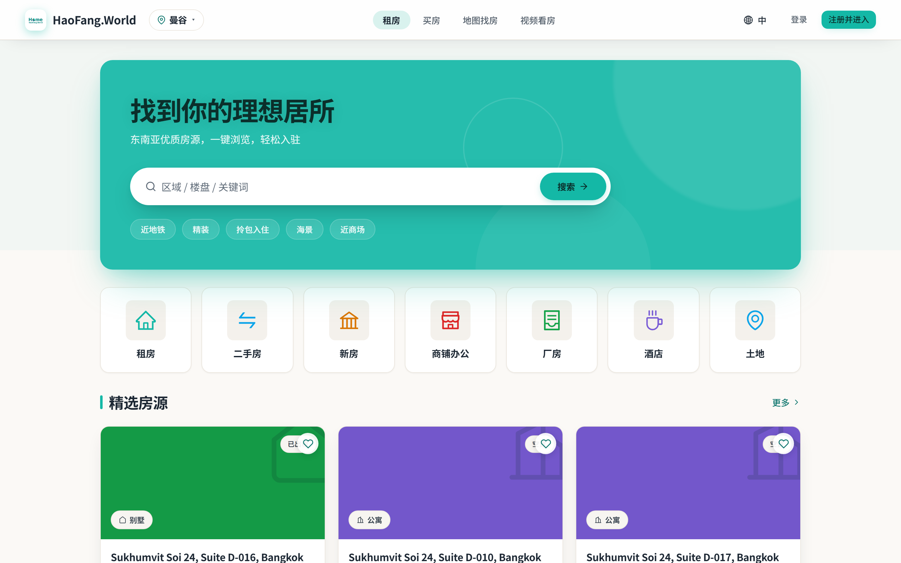
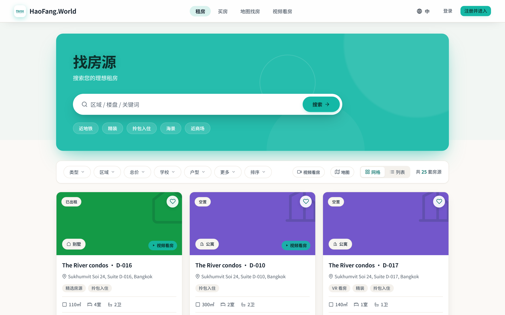
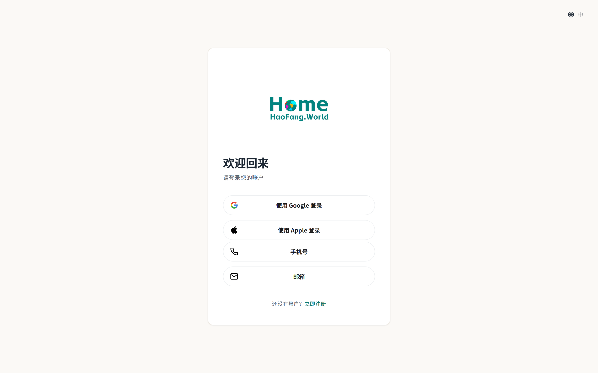
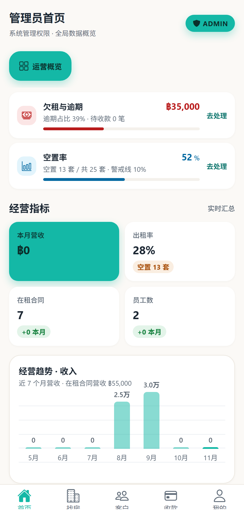
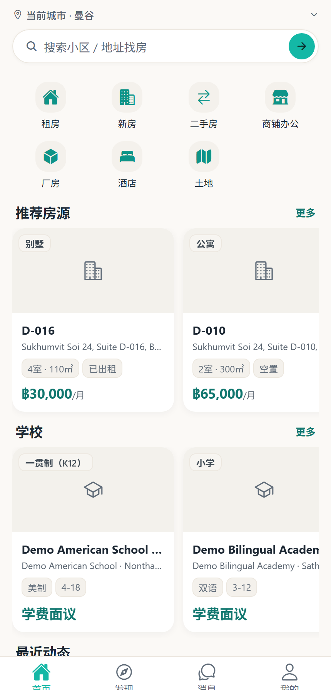
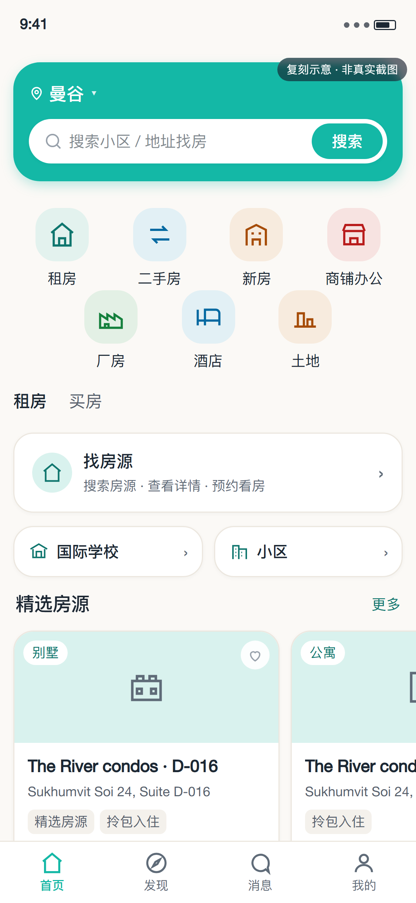
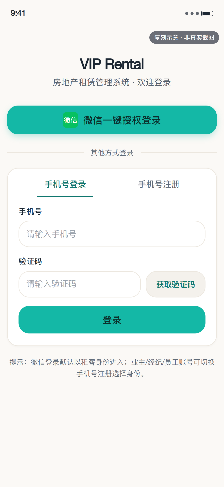

阶段 0 / 1 改动后的真实效果
令牌层与最高曝光页面已改完，这里用真实运行页面回看效果。小程序因本机无微信开发者工具，改用 HTML 复刻并按 375×812 渲染，图上已标注"复刻示意，非真实截图"。
Web
真实页面本地 dev server + 本地后端，无登录态浏览公开页面，按 1440×900 视口、2x 像素密度截取。




App
Expo Web 渲染用 Expo Web 跑起 React Native 页面后截取，宽度 430。以下为 Web 渲染结果，安全区、字体与真机可能有差异，需真机复核。


小程序
复刻示意本机没有微信开发者工具，无法截真实运行时。以下为按页面 SCSS 数值 1:1 复刻的 HTML，按 375×812（1rpx = 0.5px）渲染，图内右上角已标注。


截图过程中发现的问题（未改代码，等确认）
实际页面渲染的是 rent-search-hero / rent-prop-search-card（在 prototype-portal.css），而本轮改的 .bk-hero（home.css）、.pl-hero / .pl-item（public-listings.css）在 DOM 里并不存在。实测：标题与搜索按钮已是深墨 #0b2f2b（5.80:1），但副标题仍是 rgba(255,255,255,.88)（约 1.9:1，未达 AA），且首页 hero 仍有 3 个装饰圆。需要确认是把改动迁到 rent-* 选择器，还是删掉这批旧样式。
详情页 DOM 是 pub-detail / pub-gallery / pub-detail__title，不是 PropertyDetail.css 里的 rent-prop-header / rent-prop-rent。该页本轮改的价格色、分成条、占位图底色在这个路由上不生效；截图中价格仍是旧样式。
管理员首页与租客首页的底部 Tab（首页/发现/消息/我的）文字下缘被切掉约一半，疑似 Expo Web 安全区高度计算问题。真机不一定复现，但当前 Web 预览下确实可读性受损。
种子数据多数房源无 cover 图，卡片回落到生成的高饱和纯色占位，和暖米白 + 墨色的体系明显冲突（首页与公开列表都可见）。这是数据/占位策略问题，不是本轮改出来的，但观感影响最大。
租客首页房源卡的地址、学校名都按单行省略，实际只剩半句（如 "Sukhumvit Soi 24, Suite D-016, B…"）。可考虑放宽卡片宽度或允许两行，待确认是否属于本轮范围。
用于截图的 D-016 房源没有任何相片，画廊是"暂无图片"的暖米白占位，无法验证渐变移除后的视觉效果。建议换一条有封面的房源再看一次。